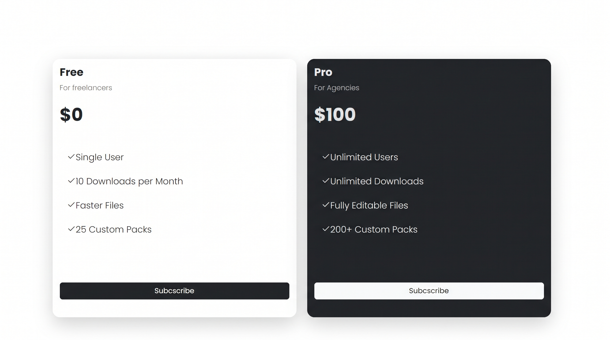
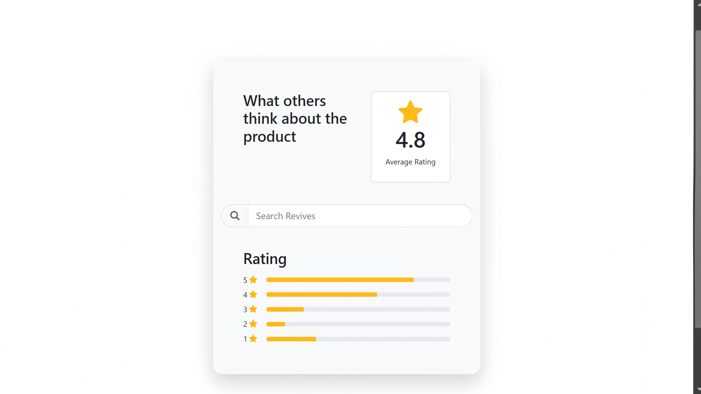

รหัสนักศึกษา:6909617554
คณะ/สาขา:วิทยาศาสตร์และเทคโนโลยี/วิทยาการคอมพิวเตอร์
ตอนนี้กำลังศึกษาอยู่มหาวิทยาลัยธรรมศาสตร์ มีความสนใจในด้านการทำเกมเพราะส่วนตัวเป็นคนชอบเล่นเกม

Role:Individual Developer
ฝึกการทำ Fontend โดย Bootstrap ด้วยการทำหน้าเว็บ Pricing Cards
Skill:HTML,Bootstrap,Git,Github

Role:Individual Developer
ฝึกการทำ Issue ใน GitHub โดยการใช้ Ai ทำหน้าที่เป็นผู้ช่วย ด้วยการทำหน้าเว็บ RatingComponent และ deployเว็บไซต์ด้วยGitHub
Skill:HTML,Bootstrap,Git,Github,AI